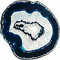

Tratamento de canal de raiz dentária
Sobre potenciais perigos à saúde
O tratamento de canal, uma das glórias brilhantes do arsenal terapêutico da odontologia moderna, que pretende “salvar” um dente que, de outra forma seria considerado irrecuperável de ser extraído (e realizado todo ano em milhões de pacientes) pode vir a ser uma das piores ofensas, quando se trata de minar a saúde humana no curto ou longo prazo. As páginas seguintes dão uma detalhada visão global do porquê é assim.
Nota: Os riscos gerais muito importantes e efeitos colaterais de obturações (há muitos deles!) são discutidos em Perfuração & obturação de dentes: uma escolha imprudente? Sobre os riscos, danos e perigos, como também as numerosas razões para se evitar tratamento dental convencional invasivo, incluindo a questão “O tratamento dentário mata os dentes?”.
Como introdução, considere o seguinte... O que nunca me foi dito por dentista algum que me aplicou um (eufemisticamente chamado) “tratamento de canal” (um dos 4 que fiz no total – dentes desde então extraídos): um procedimento de tratamento de canal significa matar o dente, já que o que lhe dá vida (seu suprimento de sangue e nervo) é permanentemente destruído e removido. O corpo subsequentemente “reconhece” que carrega uma parte morta em si mesmo e tenta se livrar dela via lise (decomposição). Apenas isso provoca uma infecção permanente controlada apenas por um forte sistema imunológico – e quando sua imunidade é comprometida como sob a investida de estresse, má nutrição, etc., o local da infecção fica maior.
Além disso... continue lendo sobre as décadas de pesquisa meticulosa realizada pelo dentista Dr. Weston A. Price que estudou os efeitos deletérios dos tratamentos de canal e sua possível relação com doenças crônicas e degenerativas. Em verdade, segundo o que escreve o dentista Hal A. Huggins em seu livro Uninformed Consent: The Hidden Dangers in Dental Care [Consentimento Desinformado: Os Perigos Ocultos nos Tratamentos Odontológicos], "pesquisa demonstrou que as toxinas nos canalículos dentinários de dentes tratados de canal e nos sítios cavitacionais1 são muito mais tóxicas que até o mercúrio. Elas são as substâncias mais tóxicas jamais descobertas.”
As doenças relacionadas a tratamentos de canal especialmente se referem ao coração e à circulação, às juntas (artrite e reumatismo), o cérebro e sistema nervosa e até câncer2.
Você pode desfazer ou neutralizar o dano (potencial) de dentes tratados em seus canais?
Esse assunto (como a extração de dentes que sofreram tratamento de canal e limpando a mandíbula ou o maxilar) é debatido nas páginas relacionadas abaixo. Diversas maneiras com que várias pessoas trataram com sucesso de infecções de canal dentário, inclusive aquelas oriundas de dentes que sofreram esse tratamento sem ter de extrair o dente podem ser encontradas em Remédios para infecção na raiz dentária: abordagens terapêuticas não tóxicas, não invasivas e/ou naturais baseadas em evidência anedótica.
Notas de Pé-de-página
1 Cavitação: infecção óssea na mandíbula e/ou no maxilar. Mais em Cavitações dentárias e infecções cavitacionais {osteonecrose isquêmica}: buracos escondidos].
2 Here a few anecdotal examples showing a relationship between dental treatment and some types of cancer.